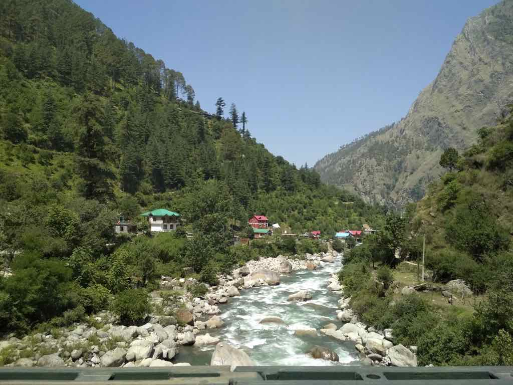
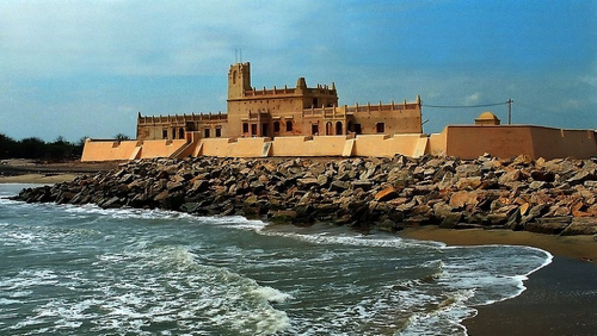

TIRTHAN VALLEY
Himachal Pradesh, India
Located in the Kullu district of Himachal Pradesh, Tirthan Valley derives its name from the Tirthan river, which winds its way through it. The pristine river originates from the icy cold glacial springs of Hanskund, a snow-capped peak in the verdant Great Himalayan National Park (GHNP).
THARANGAMBADI
Tamil Nadu, India
Tharangambadi, a once established Danish colony. Fort Dansborg, perched atop the coastal space of Tharangambadi, is a visual bliss. Lies 15 kilometres (9.3 mi) north of Karaikal, near the mouth of a distributary named Uppanar of the Kaveri River. Tranquebar was established on 19 November 1620 as the first Danish trading post in India. ...